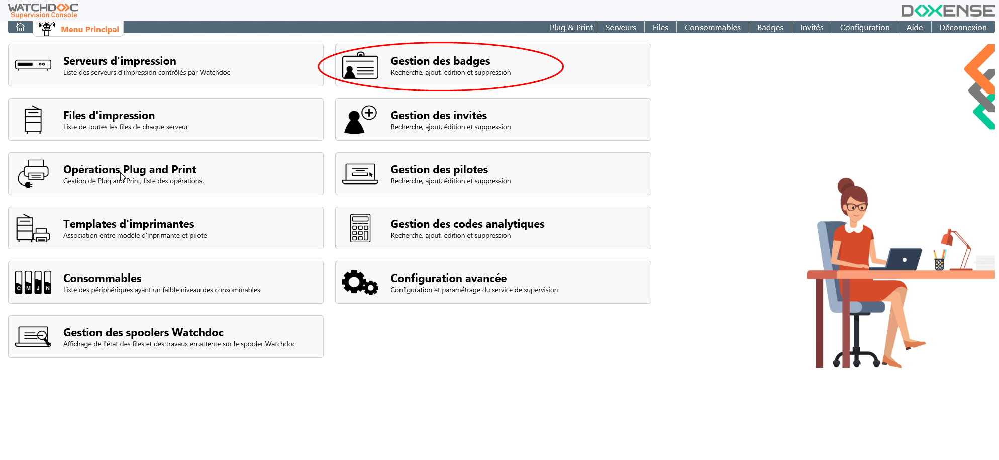
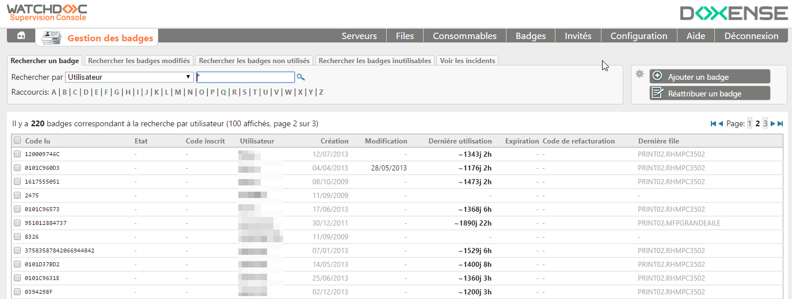
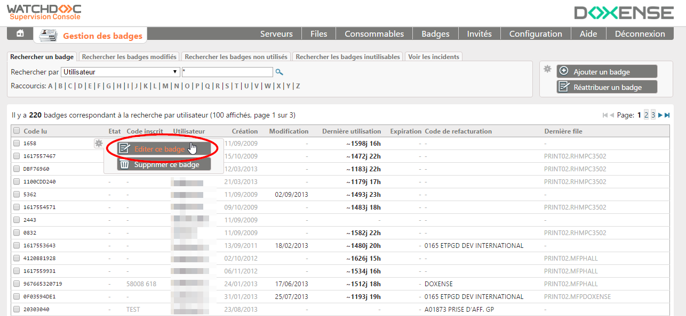
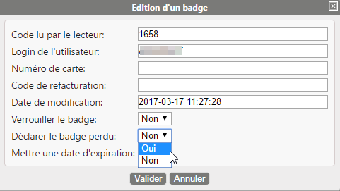
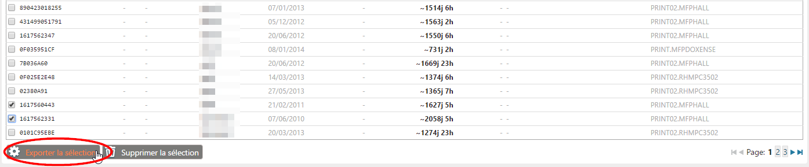
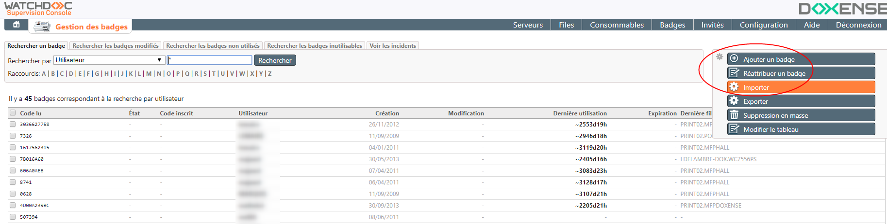
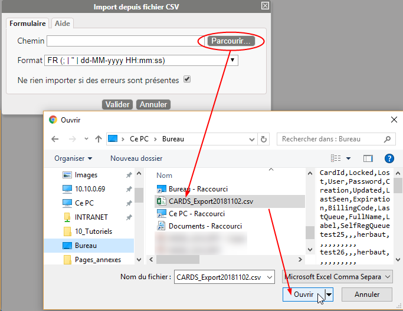
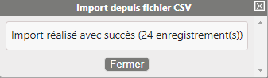
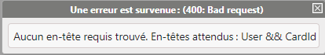
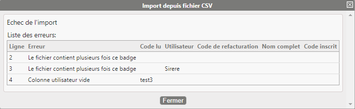

Principe
Dans Watchdoc, la gestion des badges permet d'administrer la base des badges d'authentification détenus par les utilisateurs. Le rôle de cette base (appelée CARDS) est d'établir une correspondance entre le numéro inscrit sur le badge et le compte utilisateur qui lui est associé.
Accéder à l'interface de gestion
-
Dans le Menu principal de WSC, cliquez sur bouton Gérer les badges ;

-
Vous accédez à l'interface Gestion des badges, dans laquelle s'affiche la liste des badges déjà enregistrés.

Editer un badge
Pour éditer un badge :
-
dans la liste Badges, cliquez sur le bouton
 correspondant au badge à éditer ;
correspondant au badge à éditer ; -
dans le menu affiché, sélectionnez Editer ce badge :

-
modifiez les données du badge : en plus des champs disponibles lors de la création d'un badge, vous disposez de deux champs supplémentaires :
Verrouiller le badge : sélectionnez Oui si vous souhaitez rendre le badge inutilisable ;
Déclarer le badge perdu : sélectionne Oui si vous souhaitez rendre le badge inutilisable parce qu'il est déclaré perdu. En cas de tentative d'utilisation, un mail comportant des informations est alors envoyé à l'administrateur Watchdoc®.
-
cliquez sur le bouton Valider pour enregistrer les données.

Ajouter un badge
Le bouton Ajouter un badge vous permet d'ajouter un badge manuellement. Outre cette méthode, il existe une méthode permettant aux utilisateurs d'associer eux-mêmes leurs badge à leur compte (auto-enrôlement). Pour plus d'information sur l'auto-enrôlement, référez-vous au Manuel d'installation d'un WES.
Pour ajouter un badge :
-
cliquez sur le bouton Ajouter un badge ;

-
Dans la boite Ajouter un badge, sélectionnez l'onglet correspondant au type de badge à créer :
-
Ajouter un utilisateur : si le propriétaire du badge est inscrit dans l'annuaire Active Directory ou tout autre annuaire déclaré dans Watchdoc ;
-
Ajouter un visiteur :si le propriétaire du badge n'est inscrit dans aucun annuaire de Watchdoc.

-
dans l'onglet Ajouter un utilisateur, complétez les champs suivants :
-
Code lu par le lecteur : (obligatoire) : indiquez le code inscrit sur le badge attribué à l'utilisateur et lu par le lecteur de badge. Vous pouvez enregistrer ce code automatiquement en présentant le badge à un lecteur connecté à votre poste de travail.
-
Login de l'utilisateur (obligatoire) : indiquez le compte du propriétaire du badge ;
-
Numéro de carte : si le badge dispose d'un identifiant, indiquez-le dans cette zone. Ce numéro peut servir à retrouver un badge en cas de perte, par exemple, ou pour gérer un stock de cartes.
-
Code de refacturation : indiquez un code de refacturation si nécessaire. Dans le cas où un code est déjà attribué au niveau du compte utilisateur dans l'annuaire LDAP, c'est le code attribué au badge qui prévaut.
-
Mettre une date d'expiration: si nécessaire, saisissez ici une date d'expiration. Au-delà de cette date, le badge ne fonctionnera plus.
-
cliquez sur le bouton Valider pour enregistrer le badge ;
-
réactualisez la page pour vérifier que le badge a bien été enregistré dans la base.

-
Supprimer un badge
Pour supprimer un badge,
-
dans la liste Badges, cliquez sur le bouton
correspondant au badge à supprimer ; -
dans le menu affiché, sélectionnez Supprimer ce badge :

-
dans la boite Suppression d'un badge, confirmez votre action.

Supprimer plusieurs badges
Pour supprimer plusieurs badges simultanément :
-
dans la liste des badges, cochez les cases pour sélectionner les badges à supprimer ;
-
cliquez sur le bouton Supprimer la sélection situé en base de la liste ;
-
dans la boîte Suppression de badges, validez votre demande de suppression.

Supprimer des badges en masse
La Console de Supervision dispose d'un outil permettant de supprimer des badges en masse à partir d'une liste de badges extraits d'une base de données tierce.
Pour supprimer une liste de badges dans la Console de supervision, il convient donc d'avoir, au préalable, extrait les badges dans un fichier CSV.
Pour importer la liste de badges à supprimer depuis le fichier CSV :
-
depuis l'interface Gestion des badges, cliquez sur le bouton

-
depuis la fenêtre Suppression de masse depuis fichier CSV, cliquez sur le bouton
 pour rechercher le fichier d'import dans votre espace de travail ;
pour rechercher le fichier d'import dans votre espace de travail ; -
sélectionnez le fichier .csv à importer ;

-
sélectionnez le format du fichier .csv ;
-
case "Ne rien importer si des erreurs sont présentes" :
-
cochez-la pour ne supprimer les badges qu'à la condition qu'il n'existe aucune erreur dans le fichier d'import ;
-
décochez la case pour procéder à la suppression, même en cas d'erreur dans le fichier d'import.
-
-
cliquez sur
 pour procéder à la suppression des badges.
pour procéder à la suppression des badges.
→ Au terme de l'opération, un message d'information est affiché, soit pour vous informer de son succès, soit pour vous signaler les erreurs survenues.
→ Le message d'erreur est générique si vous avez coché la case "Ne pas importer..." ou précise la (les) ligne(s) erronée(s) si vous avez décoché la case :
Supprimer des badges inutilisés
Pour supprimer des badges inutilisés :
-
depuis l'interface Gestion des badges, cliquez sur l'onglet Rechercher les badges non utilisés ;

-
dans l'interface de recherche des badges non-utilisés, saisissez une date ou sélectionnez la date dans le calendrier affiché sous le champ ;

-
après avoir indiqué la date de début de recherche, cliquez sur le bouton
 ;
; -
le résultat de recherche s'affiche dans la liste ;
-
dans la liste, sélectionnez le badge à supprimer, puis cliquez sur le bouton
pour accéder au menu contextuel ; -
dans le menu contextuel, cliquez sur le bouton
 :
:
-
puis confirmez la suppression :

Vous pouvez aussi supprimer plusieurs badges :
-
dans la liste de vos résultats de recherche, cochez les cases correspondant aux badges à supprimer ;
-
ou cochez la case Code lu en haut à gauche de la liste pour sélectionner tous les badges figurant dans la liste affichée dans cette page :

-
une fois les badges sélectionnés, cliquez sur le bouton
 situé en bas de la liste ;
situé en bas de la liste ; -
confirmez ensuite la suppression :

Réattribuer un badge
Si vous disposez d'un lecteur de badge connecté à votre ordinateur, vous pouvez réattribuer un badge très rapidement, grâce à la fonction dédiée :
-
dans la liste des badges, cliquez sur le bouton Réattribuer un badge ;
-
placez le curseur dans le champ de saisie et présentez votre badge au lecteur :
-
Dans la boîte Réattribution d'un badge, remplissez les champs relatifs au nouveau propriétaire du badge :

-
cliquez sur le bouton Valider pour confirmer la réattribution du badge.
Exporter toute la liste des badges
Pour exporter la liste exhaustive des badges :
-
dans la liste cliquez sur le bouton ck on the Exporter :

-
enregistrez le fichier d'export téléchargé par votre navigateur dans votre environnement de travail afin de l'exploiter.

Exporter une sélection de badges
Pour exporter une sélection des badges :
-
dans la liste cochez les cases correspondant aux badgest à exporter :
-
cliquez sur le bouton Exporter la sélection situé en bas de la liste :
-
enregistrez le fichier d'export téléchargé par votre navigateur dans votre environnement de travail afin de l'exploiter.

Importer une liste de badges
La Console de Supervision dispose d'un outil permettant d'importer des badges en masse à partir d'une liste de badges extraits d'une base de données tierce.
Pour importer une liste de badges dans la Console de supervision, il convient donc d'avoir, au préalable, extrait les badges dans un fichier CSV.
Depuis la base de données contenant les badges, exportez les données correspondant aux libellés suivants :
-
CardId :code lu du badge ; -
Locked :la valeur Yes ou No indique si le badge est verrouillé ou non ; -
Lost : date de perte du badge ;
-
User : nom de l'utilisateur (propriétaire du badge) ;
-
Password : mot de passe défini par le propriétaire du badge ;
-
Creation : date de création du badge ;
-
Updated : date de mise à jour du badge ;
-
LastSeen : date de dernière utilisation du badge ;
-
Expiration : date d'expiration du badge ;
-
BillingCode : code analytique associé au badge ;
-
LastQueue : dernière file d'impression sur lauqelle le badge a été utilisé.
Différents formats d'export normalisés sont disponibles :
-
Standard
-
le séparateur de colonnes est représenté par une virgule ;
-
les guillemets introduisent les valeurs ;
-
le format de date et d'heure est le suivant : yyyy-MM-dd HH:mm:ss
-
-
FR
-
le séparateur de colonnes est représenté par un point-virgule ;
-
les guillemets introduisent les valeurs ;
-
le format de date et d'heure est le suivant : dd-MM-yyyy HH:mm:ss
-
-
US
-
le séparateur de colonnes est représenté par une virgule ;
-
les guillemets introduisent les valeurs ;
-
le format de date et d'heure est le suivant : MM-dd-yyyy hh:mm:ss AM
-
Le fichier d'export doit être enregistré dans un espace accessible depuis la Console de Supervision.
Pour importer la liste de badges depuis le fichier CSV :
-
depuis l'interface Gestion des badges, déployez le menu de gestion et cliquez sur le bouton


-
depuis la fenêtre Import depuis fichier CSV, cliquez sur le bouton
pour rechercher le fichier d'import dans votre espace de travail ; -
sélectionnez le fichier CSV à importer ;

-
sélectionnez le format du fichier .csv ;
-
case "Ne rien importer si des erreurs sont présentes" :
-
cochez la pour n'importer les badges qu'à la condition qu'il n'existe aucune erreur dans le fichier d'import ;
-
décochez la case pour procéder à l'import, même en cas d'erreur dans le fichier d'import.
-
cliquez sur
pour procéder à l'import :
-
Au terme de l'opération, un message d'information est affiché, soit pour vous informer de son succès, soit pour vous signaler les erreurs survenues.

-
si vous avez coché la case "Ne pas importer...", le message d'erreur est générique ; si vous avez décoché la case, le message d'erreur précise la (les) ligne(s) erronée(s) :

